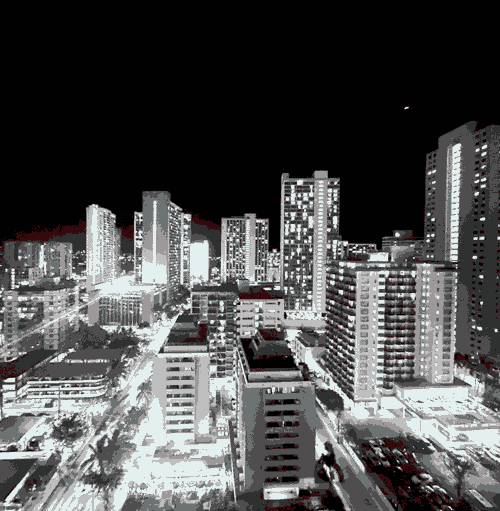
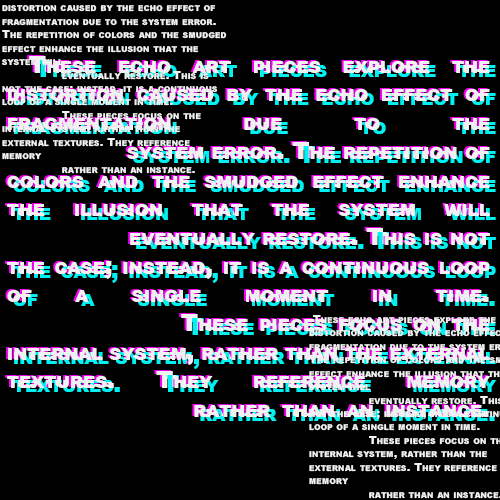
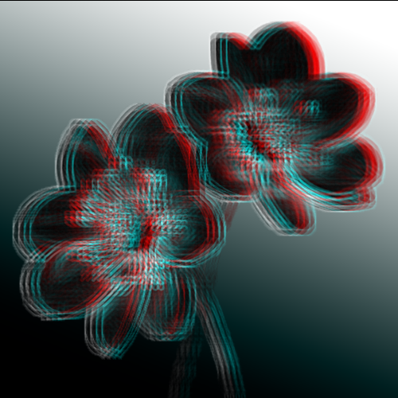

Echo in glitch art is different from texture. Texture is focused on the surface quality, while echo is about repetition over time. This suggests repetition without resolution. Items become repeated, duplicated, and displaced. Echo shows a moment of failure within the digital system. Instead of the art being concise and clean, fragmentation in echo portrays the meaning of instability in glitch art.


These echo art pieces explore the distortion caused by the echo effect of fragmentation due to the system error. The repetition of colors and the smudged effect enhance the illusion that the system will eventually restore. This is not the case; instead, it is a continuous loop of a single moment in time. These pieces focus on the internal system, rather than the external textures. They reference memory rather than an instance.
